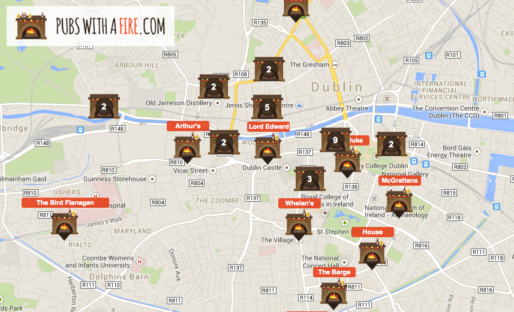

Pubs With A Fire is a web application that allows users to search, add and rate pubs from around the world that have a warm fireplace inside. It currently has over 800 pubs listed in Ireland, UK, US, Australia and beyond
.What began as a small personal project but soon gathered interest on Twitter and has since featuring in national newspapers, radio and online.
Pubs With A Fire is built with Angular JS and Django. It uses GeoDjango to provide geo spatial searching and backend functionality while the frontend relies on the Google Maps API to provide the mapping.